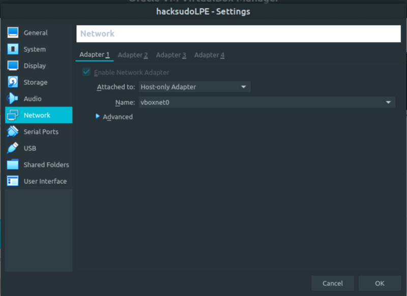
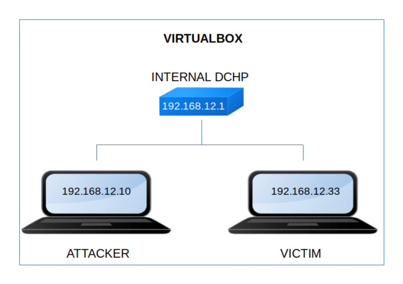

Hacksudo L.P.E.
▸ Hacksudo L.P.E.
▸ 2. Finding Services and Ports
▸ 1. Scan Network
▸ 3. Enumerate
▸ 3.1 Trying apt-get Abusing Challenge
▸ 3.2 Trying arp Abusing Challenge
Difficulty: Easy.
Flag: 1 flag1.
Learning:
• Reconnaissance
Scan Network
Find services
• Enumerate
apt-get abusing
arp abusing
• Exploitation
apt-get chagenlog apt
• Privilege Escalation
apt-get
arp reading file
• Download (Mirror): https://download.vulnhub.com/hacksudo/hacksudoLPE.zip
• Download (Torrent): https://download.vulnhub.com/hacksudo/hacksudoLPE.zip.torrent
Install the machine on VirtualBox:
1. Download the file and extract it.
2. On Virtualbox choose File->Import Appliance.
3. Select the file “ova”.
4. Accept to import.


Watch your Machine IP.
$ ifconfig
Output:

Diagram
